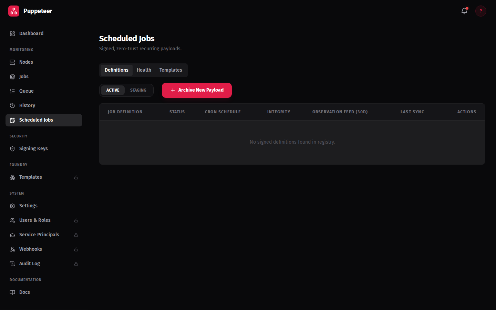

Job Scheduling
Axiom runs scripts on a schedule using APScheduler cron triggers.
Prerequisites
Before creating a scheduled job, you need:
- A working node deployment. See the First Job guide for the full setup walkthrough.
- A signed script. Every scheduled job must have a valid Ed25519 signature before it can be scheduled. Register your public key in the Signatures section of the dashboard before proceeding.
Creating a Job Definition
Open the Job Definitions view from the sidebar. Click New Job Definition to open the creation form.
Fill in the following fields:
| Field | Description |
|---|---|
| Name | A human-readable label for this job definition. |
| Script Content | The Python script body to run on the target node. |
| Signature ID | The UUID of the Ed25519 public key registered in Signatures. |
| Signature Payload | The base64-encoded signature of the script content produced by your signing key. |
| Schedule (cron) | A 5-field cron expression controlling when the job fires. See Cron Syntax below. |
| Target Node ID | Optional. Pin the job to a specific node UUID. |
| Target Tags | Optional. A list of node tags (e.g. ["gpu", "secure"]). |
| Capability Requirements | Optional. A dict of required capabilities (e.g. {"os_family": "DEBIAN"}). |
| Max Retries | Number of retry attempts on failure. Default: 0 (no retries). |
| Backoff Multiplier | Multiplier applied to the retry wait interval. Default: 2.0. |
| Timeout (minutes) | Optional. Job is marked failed if it does not complete within this time. |
New jobs start as DRAFT
Creating a job definition via the dashboard sets its status to DRAFT. The scheduler will not fire a DRAFT job. You must promote it to ACTIVE before it will run. See Job Lifecycle below.
Cron Syntax
Axiom uses 5-field standard cron with the field order:
minute hour day month day_of_week
APScheduler supports the *, /, -, and , operators.
Common patterns:
| Pattern | Expression | Description |
|---|---|---|
| Every 5 minutes | */5 * * * * |
Runs at :00, :05, :10, ... |
| Daily at 2 AM | 0 2 * * * |
Every day at 02:00 |
| Weekdays at noon | 0 12 * * 1-5 |
Mon–Fri at 12:00 |
| First of month | 0 0 1 * * |
Midnight, 1st of each month |
| Every hour | 0 * * * * |
At :00 of every hour |
Expression builder
Use crontab.guru to compose and verify complex cron expressions before saving a job definition.
Do not use 6-field cron
Do not use a 6-field cron expression (with a leading seconds field). Axiom uses 5-field standard cron; a 6-field string will fail to schedule and the job definition will not be activated.
The Scheduled Jobs view
The Scheduled Jobs view lists all active job definitions with their next fire time and last execution status:

Node Targeting
Three targeting modes are available. They can be combined, but specific targeting takes precedence:
| Mode | Field | When to use |
|---|---|---|
| Any eligible node | (leave all targeting fields empty) | Stateless jobs that can run anywhere |
| Capability targeting | capability_requirements dict |
Jobs requiring specific OS, runtime, or hardware |
| Tag targeting | target_tags list |
Jobs for a tagged group (e.g. ["gpu"]) |
| Specific node | target_node_id UUID |
Pinned jobs that must run on a named node |
Capability targeting example:
{
"os_family": "DEBIAN",
"runtime": "python3"
}
Only nodes whose reported capabilities satisfy every key–value pair in the dict will be considered for assignment.
Tag targeting example:
["gpu", "secure"]
Only nodes with all listed tags will match.
Capability vs tag targeting
Use capability targeting when you need to match on specific runtime properties. Use tag targeting when you control node tags directly and want a human-readable grouping (e.g. "production", "gpu", "europe").
Job Lifecycle
A job definition moves through the following statuses:
| Status | Meaning |
|---|---|
DRAFT |
Created but not yet active. The scheduler skips DRAFT jobs. Promote to ACTIVE when ready. |
ACTIVE |
Live — the scheduler fires the job on each scheduled cron interval. |
DEPRECATED |
Soft-retired. The scheduler skips firing and logs job:deprecated_skip. History is preserved. |
REVOKED |
Hard-retired. The scheduler skips firing and logs job:revoked_skip. Use for security-sensitive revocations. |
Typical promotion path: DRAFT → ACTIVE. Retirement path: ACTIVE → DEPRECATED or REVOKED.
Overlap guard: If a previous instance of the job is still PENDING, ASSIGNED, or RETRYING when the next cron fire is due, Axiom skips the new instance and logs job:cron_skip. This prevents queue buildup for slow or hung jobs.
REVOKED is not reversible via the UI
Revoking a job definition is intended for security events (e.g. a compromised signing key). Treat it as permanent.
Retry Configuration
When a job fails, Axiom can retry it automatically based on the job definition's retry settings:
| Field | Default | Description |
|---|---|---|
max_retries |
0 |
Maximum number of retry attempts. 0 = no retries. |
backoff_multiplier |
2.0 |
Each successive retry waits attempt × base_interval × backoff_multiplier. |
timeout_minutes |
(none) | If set, a running job that exceeds this duration is marked failed. |
Example: With max_retries=3 and backoff_multiplier=2.0, the retry waits are approximately 1×, 2×, and 4× the base interval.
Retries and the overlap guard interact
A job in RETRYING state counts as an active instance for the overlap guard. If a job is retrying when the next scheduled fire is due, the new fire will be skipped with job:cron_skip.
Staging Review
Scheduled jobs use the same DRAFT → ACTIVE promotion workflow as manually pushed jobs. New jobs created via the dashboard or API start as DRAFT and must be reviewed before they run.
The Staging view lets you inspect the script content, verify the signature, and promote or reject a job definition before it goes live.
See the axiom-push guide for the full Staging view walkthrough, including how to push a script, review it, and promote it to ACTIVE.
Scheduling Health
The Scheduling Health panel shows aggregate execution statistics for all job definitions over a configurable time window (1 hour, 6 hours, 24 hours, or 7 days).
Access it from the Job Definitions view → Scheduling Health panel.
Health Metrics
| Metric | Meaning |
|---|---|
fired |
Job fires that executed successfully |
skipped |
Fires skipped because a previous fire was still running |
failed |
Fires that resulted in a job failure |
late |
Fires that started later than their scheduled time |
missed |
Scheduled fires that did not occur at all (e.g. service was down) |
Each definition shows a health status: ok, warning, or error based on its failure and missed-fire rates.
API
GET /api/health/scheduling?window=24h
Returns aggregate counts and per-definition rows. The window parameter accepts 1h, 6h, 24h, or 7d.
Execution Retention
By default, Axiom keeps 14 days of execution history. Older job execution records are pruned automatically.
To change the retention period:
- Go to Admin → Retention Settings
- Set
execution_retention_daysto your desired value (minimum: 1, recommended: 30–90 for production) - Click Save
Pinned jobs are not pruned
Individual job execution records can be pinned to prevent pruning. Use pinning for post-incident forensics or compliance evidence.